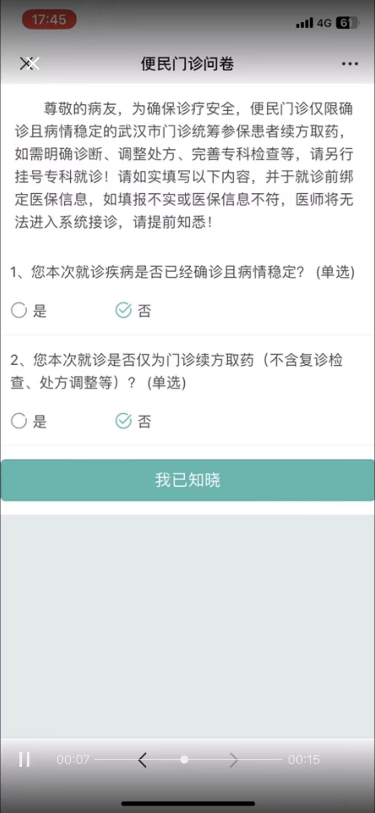
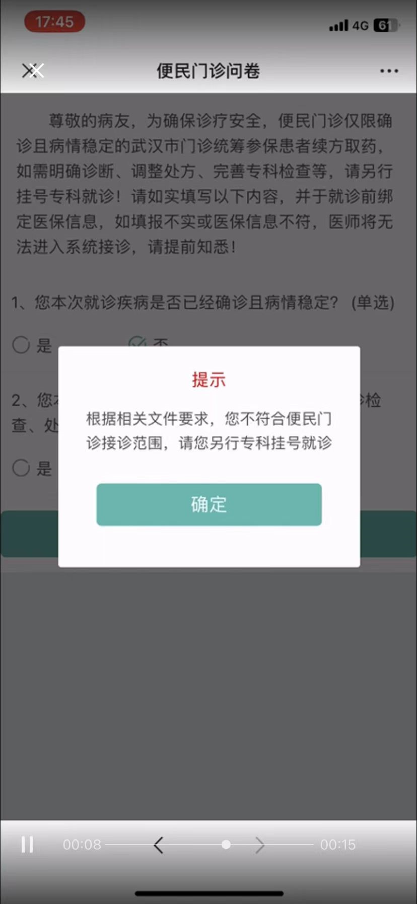
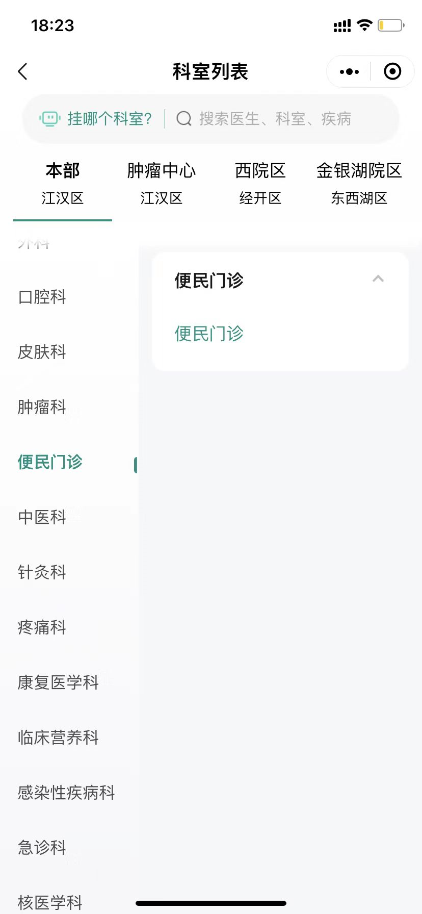
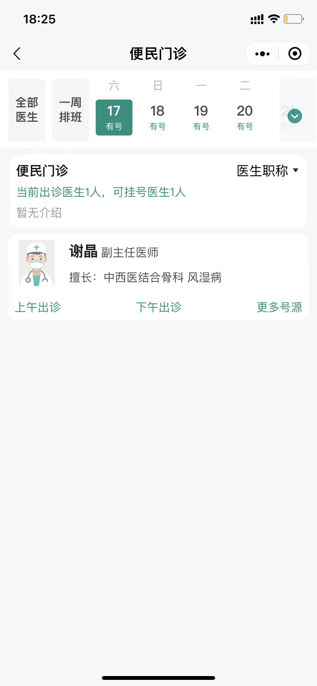

页面逻辑备注
科室id：37297 科室名称：便民门诊
科室id：37318 科室名称：便民门诊
科室id：37319 科室名称：便民门诊
科室id：36477 科室名称：老年综合评估门诊
科室id：37417 科室名称：专病—肌少症专病门诊
针对以上这几个科室需要新增对应的问卷填写，以上提到的这几个科室对应科室ID都需要处理，这里的科室ID是官微的科室ID，可能和融合版不太一样，需要开发仔细核对一下
页面逻辑备注
便民门诊的问卷内容为：
1、您本次就诊疾病是否已经确诊且病情稳定？
单选选项：是 否
2、您本次就诊是否仅为门诊续方取药（不含复诊检查、处方调整等）？
单选选项：是 否
针对便民门诊问卷，只有都选择了是的情况下才能进入到医生列表页，否则弹窗提示“根据相关文件要求，您不符合便民门诊接诊范围，请您另行专科挂号就诊”
老年综合评估门诊、专病—肌少症专病门诊的问卷内容为：
1、您的年龄是否超过60岁？
是 □ 否□
2.您在日常生活及家务方面是否需要人照顾？
是□ 否□
3.最近1年内是否跌倒过？
是□ 否□
4.您在最近1年内是否胃口变差，吃得比以前少，或体重下降超过3公斤？
是□ 否□
以上4个问题中有两个或以上回答为“是”，可挂号
否则弹窗提示““根据相关文件要求，您不符合XXXXX门诊接诊范围，请您另行专科挂号就诊””
UI效果图可参考原先在线挂号预问诊的UI效果图；
针对便民门诊问卷，需要在问卷上方是提示：
尊敬的病友，为确保诊疗安全，便民门诊仅限确诊且病情稳定的武汉市门诊统筹参保患者续方取药，如需明确诊断、调整处方、完善专科检查等，请另行挂号专科就诊！请如实填写以下内容，并于就诊前绑定医保信息，如填报不实或医保信息不符，医师将无法进入系统接诊，请提前知悉！
车谷院区
经开区
主院区
江汉区